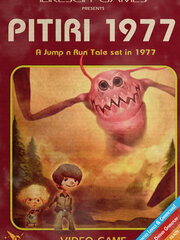

Pitiri 1977
Pitiri 1977
Details
|  | |
| Playtime | 23m 0s |
| Last Activity | 12/21/2015 3:59:50 |
| Added | 8/19/2023 14:50:25 |
| Modified | 8/19/2023 18:58:13 |
| Completion Status | Played |
| Library | Steam |
| Source | Steam |
| Platform | PC (Windows) |
| Release Date | 10/5/2014 |
| Community Score | 60 |
| Critic Score | |
| User Score | |
| Genre | Adventure Indie Platform Role-playing (RPG) |
| Developer | ILIKESCIFI Games |
| Publisher | ILIKESCIFI Games |
| Feature | Single Player |
| Links | Steam Official Twitch |
| Tag | |
Description
Now isn’t this great…!
It’s my brother’s birthday and this Claw-thing crashes into our house and takes away Sammy! I guess someone has to play hero now…

Pitiri 1977 is an adventure-platformer with much exploration in both world and story, and is paying tribute to its classic pioneers – not only by its gameplay, but also by its background story. A narrative, that is set in 1977 (the glorious year of Star Wars IV, the Atari 2600, the Voyager One spacecraft & Led Zeppelin's “Presence”), in an imposing world, created by using hand-painted graphics, characters, solid physics and a 1970s soundtrack, gradually opened up by the player’s acquired abilities.
You play as a kid with supernatural powers, whose brother has been kidnapped by an unknown evil. On your quest to get your brother back, you venture through a twisted 70s science fiction utopia that lies beyond the known…

KEY FEATURES
★★★★
Winner of the 'Content Award 2010' for Games and the Impulse XC Sponsorship 2010, Pitiri 1977 is shaping up to be a rather striking-looking game. - indiegames.com
★★★★
Pitiri 1977 is easy to pickup, feels like a familiar platformer with the added excellence of special abilities to progress through each level, and is visually appealing is almost every way – especially the fantastic cutscene. - indiegamemag.com
★★★★
An excellent platformer game that is extremely well polished and has some very creative game play mechanics. - www.clickteam.com
★★★★
A jawdropping cinematic intro and an introductory level in a beautifully handpainted suburban landscape signal that these guys mean serious business. - Adam Dobay (Klikdisc)

It’s my brother’s birthday and this Claw-thing crashes into our house and takes away Sammy! I guess someone has to play hero now…
Pitiri 1977 is an adventure-platformer with much exploration in both world and story, and is paying tribute to its classic pioneers – not only by its gameplay, but also by its background story. A narrative, that is set in 1977 (the glorious year of Star Wars IV, the Atari 2600, the Voyager One spacecraft & Led Zeppelin's “Presence”), in an imposing world, created by using hand-painted graphics, characters, solid physics and a 1970s soundtrack, gradually opened up by the player’s acquired abilities.
You play as a kid with supernatural powers, whose brother has been kidnapped by an unknown evil. On your quest to get your brother back, you venture through a twisted 70s science fiction utopia that lies beyond the known…
KEY FEATURES
- Stylish 70s Setting
- Story driven gameplay
- Metroidvania like adventure
- Hand-painted Levels, Characters and Objects
- Solid Physics engine
- Cool 1970s Music
- 5 supernatural Abilities
- Sandbox Level Editor (Beta)
- Including full soundtrack!
★★★★
Winner of the 'Content Award 2010' for Games and the Impulse XC Sponsorship 2010, Pitiri 1977 is shaping up to be a rather striking-looking game. - indiegames.com
★★★★
Pitiri 1977 is easy to pickup, feels like a familiar platformer with the added excellence of special abilities to progress through each level, and is visually appealing is almost every way – especially the fantastic cutscene. - indiegamemag.com
★★★★
An excellent platformer game that is extremely well polished and has some very creative game play mechanics. - www.clickteam.com
★★★★
A jawdropping cinematic intro and an introductory level in a beautifully handpainted suburban landscape signal that these guys mean serious business. - Adam Dobay (Klikdisc)